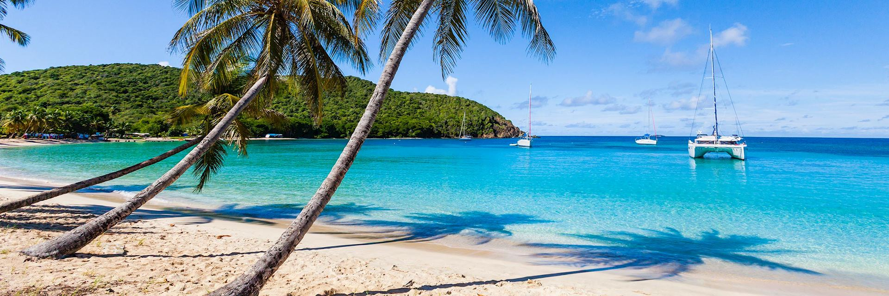

This page is about the different countries I've been to and where Id like to go, with information from wikipedia and some with personal comments.
First off is palestine. This is the country my dad was born and raised in. I personally went there in the early 2010's and was amazed at how similar and different things were at the same time. It was not unusual to see kids playing soccer in alleys.However it was also extremly common to go into town and see soldiers from the occupation with shotguns and hummvees just hanging around watching you or randomly arresting young able bodied men.

Rome has been a major Christian pilgrimage site since the Middle Ages. People from all over the Christian world visit Vatican City, within the city of Rome, the seat of the papacy. The city became a major pilgrimage site during the Middle Ages. Apart from brief periods as an independent city during the Middle Ages, Rome kept its status as Papal capital and holy city for centuries, even when the Papacy briefly relocated to Avignon (1309–1377). Catholics believe that the Vatican is the last resting place of St. Peter.
While there have been discoveries of archaeological evidence of human occupation of the Rome area from approximately 14,000 years ago, the dense layer of much younger debris obscures Palaeolithic and Neolithic sites.[9] Evidence of stone tools, pottery, and stone weapons attest to about 10,000 years of human presence. Several excavations support the view that Rome grew from pastoral settlements on the Palatine Hill built above the area of the future Roman Forum. Between the end of the Bronze Age and the beginning of the Iron Age, each hill between the sea and the Capitol was topped by a village.
During the Renaissance, Rome became well known as a centre of high-cuisine, since some of the best chefs of the time worked for the popes. An example of this was Bartolomeo Scappi, who was a chef working for Pius IV in the Vatican kitchen, and he acquired fame in 1570 when his cookbook Opera dell'arte del cucinare was published. In the book he lists approximately 1000 recipes of the Renaissance cuisine and describes cooking techniques and tools, giving the first known picture of a fork.
Ireland made the list in part because of its rainy and colder climate and lush greenery.
In December 1921, the Anglo-Irish Treaty was concluded between the British government and representatives of the Second Dáil. It gave Ireland complete independence in its home affairs and practical independence for foreign policy, but an opt-out clause allowed Northern Ireland to remain within the United Kingdom, which it immediately exercised. Additionally, Members of the Free State Parliament were required to swear an oath of allegiance to the Constitution of the Irish Free State and make a statement of faithfulness to the King. Disagreements over these provisions led to a split in the nationalist movement and a subsequent Irish Civil War between the new government of the Irish Free State and those opposed to the treaty, led by Éamon de Valera. The civil war officially ended in May 1923 when de Valera issued a cease-fire order.
Ireland's culture comprises elements of the culture of ancient peoples, later immigrant and broadcast cultural influences (chiefly Gaelic culture, Anglicisation, Americanisation and aspects of broader European culture). In broad terms, Ireland is regarded as one of the Celtic nations of Europe, alongside Scotland, Wales, Cornwall, Isle of Man and Brittany. This combination of cultural influences is visible in the intricate designs termed Irish interlace or Celtic knotwork. These can be seen in the ornamentation of medieval religious and secular works. The style is still popular today in jewelry and graphic art, as is the distinctive style of traditional Irish music and dance and has become indicative of modern Celtic culture in general.
St Vincent and the Grenadines is a beautiful carribean island,despite it's hurting economy
Agriculture, dominated by banana production, is the most important sector of this lower-middle-income economy. The services sector, based mostly on a growing tourist industry, is also important. The government has been relatively unsuccessful at introducing new industries, and the unemployment rate remains high at 19.8% in the 1991 census to 15% in 2001. The continuing dependence on a single crop represents the biggest obstacle to the islands' development as tropical storms wiped out substantial portions of bananas in many years. However, the tourism sector has considerable potential for development. The filming of the Pirates of the Caribbean movies on the island has helped to expose the country to more potential visitors and investors. Recent growth has been stimulated by strong activity in the construction sector and an improvement in tourism.